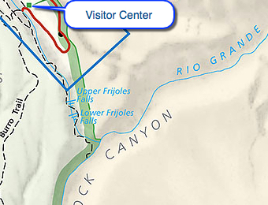
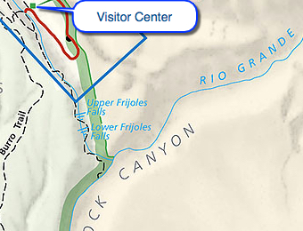

Hike New Mexico
w/ Tom & Ken
Upper & Lower Falls Trail
| Difficulty | Round-trip | Type | Elev. Chg. | Exposure | Wow Factor | Facilities | Seasons | Get There |
|---|---|---|---|---|---|---|---|---|
| Easy | 3 miles | Out-and-back | 300 ft | Sun, some shade | Falls Views | Visitor Center | All | Directions |


 

- Jun 27, 2005: Penstemmon on the trail
- Jun 27, 2005: Beautiful Falls Trail
- Jun 27, 2005: Upper Falls before the flood
- Jun 27, 2005: Lower Falls before the flood
- https://www.flickr.com/photos/139088815@N08/27577209006/in/album-72157669136001962
- https://www.flickr.com/photos/139088815@N08/27001855383/in/album-72157669136001962
- https://www.flickr.com/photos/139088815@N08/27511516762/in/album-72157669136001962
- https://www.flickr.com/photos/139088815@N08/27001849293/in/album-72157669136001962
The Upper and Lower Falls Trail became the Upper Falls Trail after the flood in 2011. Much of the trail was wiped out and the Lower Falls is no longer accessible. Parts of the original Upper Falls Trail was re-routed. Nonetheless, the hike to the Upper Falls is well worth the effort. The trail is not long and the grade is easy, offering some very nice views of the canyon en route. Because of the water in this area, the environment seems quite different than the rest of the canyon. The NPS Site has more information on the trail and its history, as does the American Southwest Site.